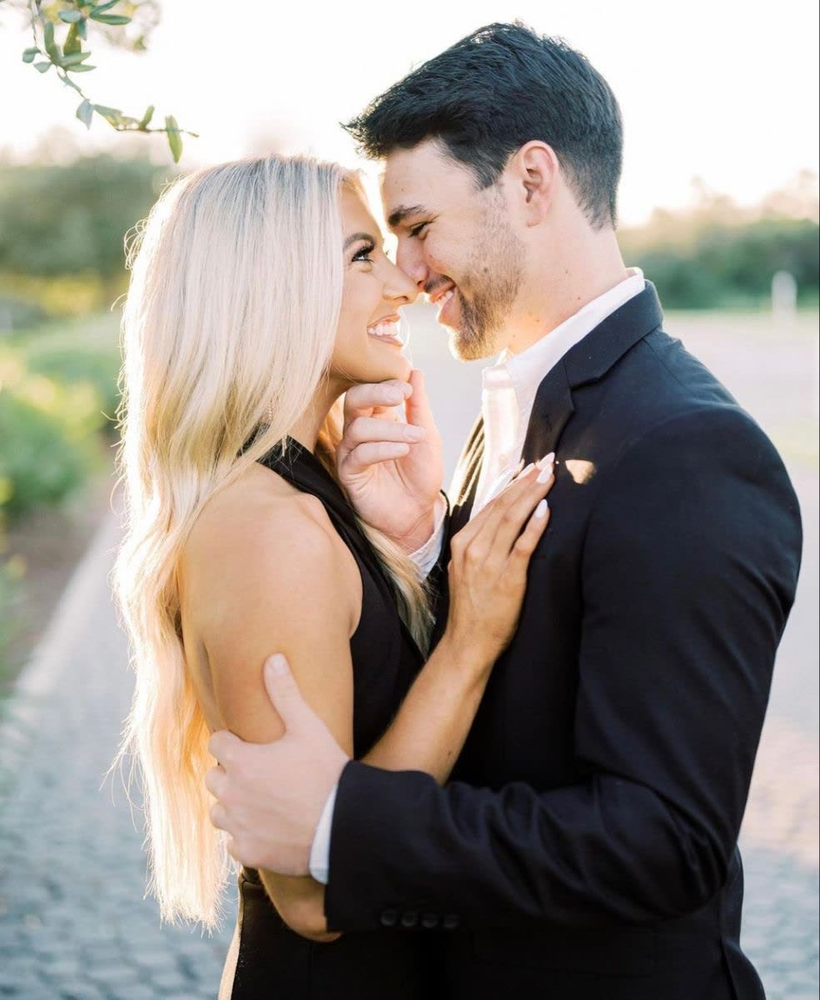

La nostra storia — 01
L’inconfondibile mano di Dio
Non possiamo raccontare questa storia senza riconoscere l’inconfondibile mano di Dio all’opera in ogni minimo dettaglio. Attraverso ogni svolta e ogni imprevisto, è stata la Sua guida divina a orchestrare i nostri passi e a unirci.
Ci siamo incontrati a Firenze, in un pomeriggio in cui nessuno dei due aveva intenzione di restare a cena. Una conversazione è diventata un caffè, il caffè è diventato una passeggiata verso Fiesole, e da allora abbiamo smesso di camminare da soli. Il fidanzamento è arrivato tra gli ulivi, senza annunci e senza fretta: solo la certezza, già scritta, che eravamo l’uno per l’altra.
Dio è bello
«È incredibile come Dio renda ogni cosa bella al momento giusto. Ha anche posto nel cuore dell’uomo il desiderio di conoscere il futuro, ma nessuno può comprendere appieno la portata della Sua opera meravigliosa dal principio alla fine»
Ecclesiaste 3:11

Il fidanzamento